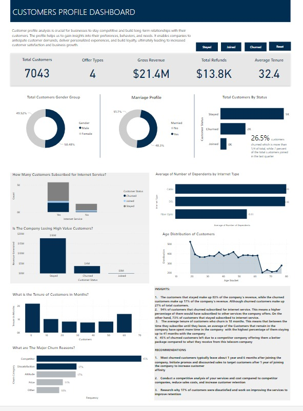
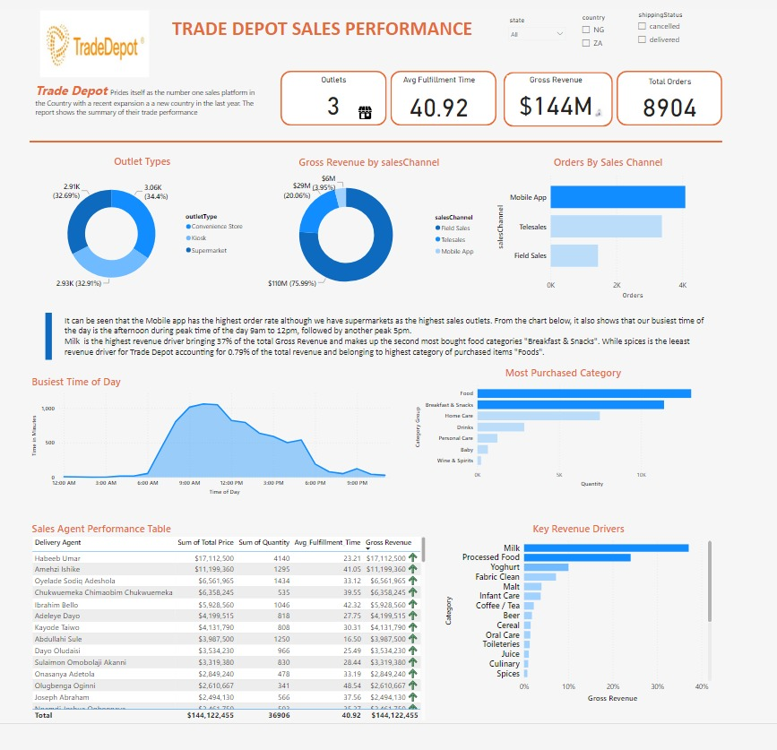
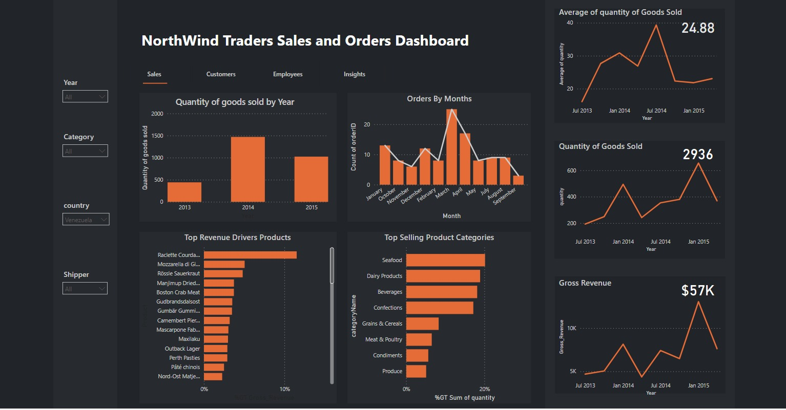

Some of the best ways for non-technical audience to understand technical analysis is through the help of detailed dashboards and reports
that is easy to understand. This helps stakeholders make data informed decisions through actionable insights.
Below are some dashboard projects I have worked on using different data visulaization tools like Power BI and Tableau.

Churn data for a fictional Telecommunications company that provides phone and internet services to 7,043 customers in California, and includes details about customer demographics, location, services, and current status.

This is a detailed analysis for Trade Depot sales performance. Trade Depot is one of Migerians leading e-commerce industry. The report shows the performance of their outlets and sales channels, sales agents, busiest time of the day, food categories performance and top revenue drivers, driving growth at Trade Depot.

Sales & order data for Northwind Traders, a gourmet food supplier, including information on customers, products, orders, shippers, and employees.
The dashboard is divided into 4 sections. The first section showing insights on sales from 2013 to 2015, orders, revenue drivers, top selling products and quarterly insights into performance.
This is followed by insights on the customers location, revenue, etc. Thirdly we have the employees performance and lastly, insights and recommendations.

This is the survey response of 1500 Austrilian workers taken in the year 2020 when Covid-19 hit. This report shows insights on organizations preparedness & openess to remote work and employees preferences .